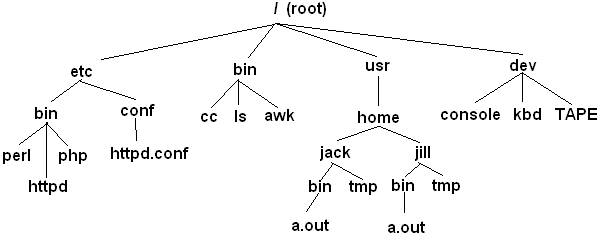
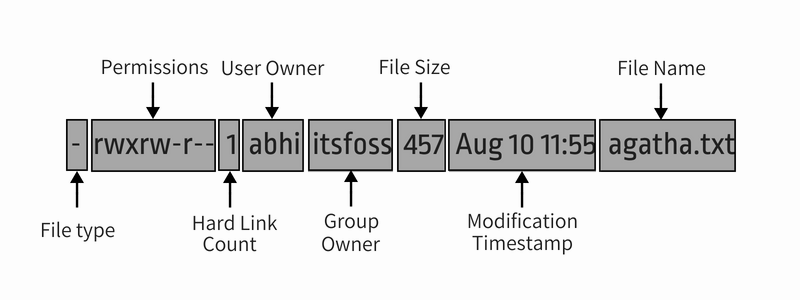
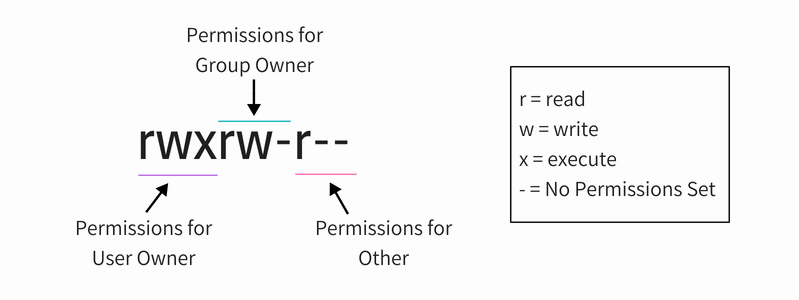
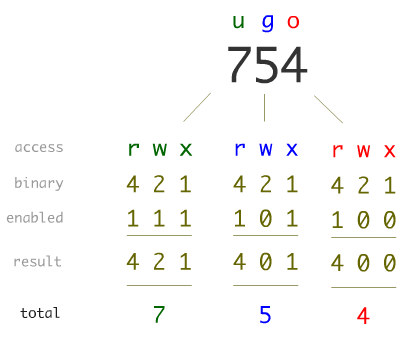
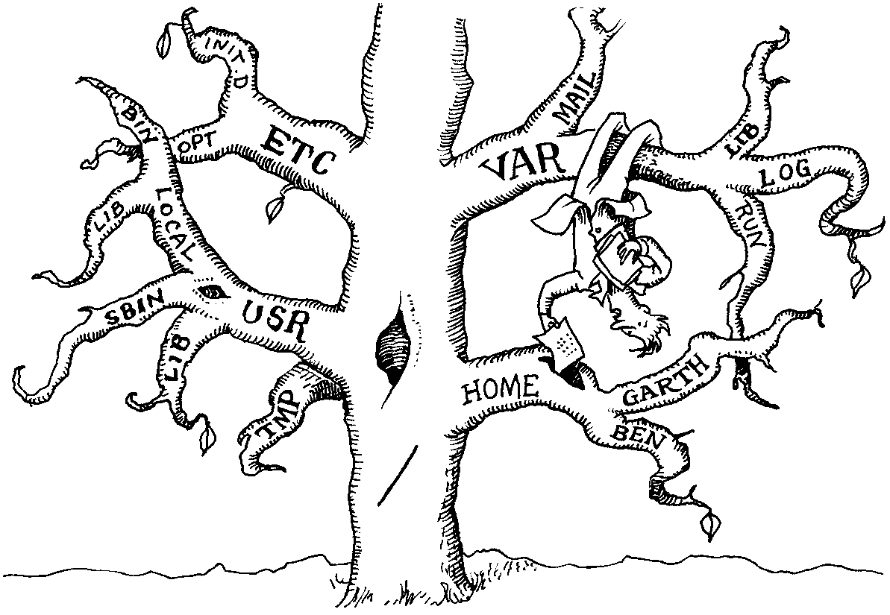
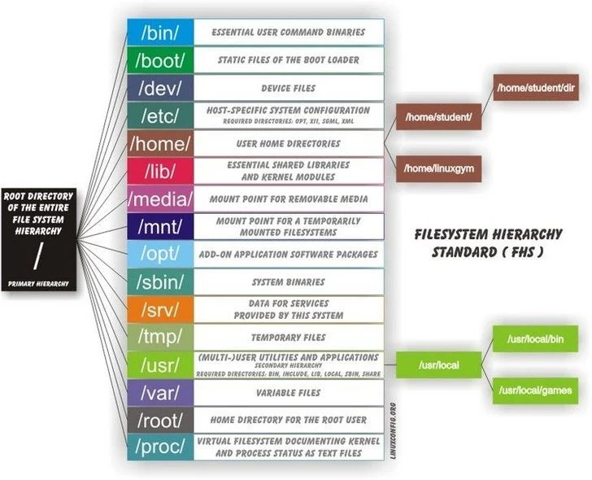

Tema 2: Organización de un sistema operativo tipo GNU/Linux
Programación y Administración de Sistemas
(2023-2024)
1 Objetivos y evaluación
Objetivos
Describir los elementos fundamentales de organización del sistema operativo GNU/Linux.
Identificar la importancia de los ficheros en GNU/Linux (“si algo no es un fichero, entonces es un proceso”).
Describir en líneas generales cómo se organiza el sistema de ficheros y qué son los nodos-i.
Definir qué papel tienen el usuario y el grupo propietario de un fichero y cómo pueden modificarse.
Interpretar una cadena de permisos de GNU/Linux.
Cambiar los permisos de un fichero, tanto en modo simbólico como en modo absoluto.
Explicar el objetivo de los permisos especiales (sticky bit,
suidysgid).Utilizar la máscara
umaskpara cambiar los permisos por defecto con los que se crean los archivos y directorios.Explicar cómo se aplican los bits de permisos a la hora de decidir si un usuario puede realizar una determinada acción sobre un fichero.
Distinguir todos los tipos de ficheros que se pueden utilizar en GNU/Linux y diferenciar claramente entre enlaces simbólicos y enlace físicos.
Explicar cómo se represan los dispositivos en GNU/Linux.
Enumerar las carpetas fundamentales de la estructura genérica del sistema de ficheros en GNU/Linux.
Diferenciar entre contenidos estáticos y dinámicos y contenidos compartibles y no compartibles.
Evaluación
Cuestionarios objetivos.
Pruebas de respuesta libre.
2 Sistema de ficheros
Ficheros
En GNU/Linux, todo son ficheros (“si algo no es un fichero, entonces es un proceso”):
Los programas u órdenes son ficheros:
/bin/ls,/usr/bin/find…Los dispositivos I/O son ficheros:
/dev/sda,/dev/fd0,/dev/tty0…Comunicación entre procesos: sockets o tuberías (pipes).
Directorios, ficheros de datos, ficheros de configuración…
El propio núcleo del sistema operativo (kernel).
GNU/Linux tiene una estructura jerárquica de directorios, conocida como sistema de archivos:
/\(\rightarrow\) directorio raíz.Puede estar compuesto por varias particiones pertenecientes a varios dispositivos (discos duros, CDs, DVDs...).
Todos disponibles desde la jerarquía de directorios.
Sistema de ficheros
Guarda los ficheros del sistema.
Se organiza de manera jerárquica, en directorios.
No hay unidades.

Sistema de ficheros: nodos-i
Aunque a nivel lógico, el sistema de ficheros parece un árbol, en realidad los ficheros se almacenan desorganizados por el disco duro.
Un fichero puede tener sectores a lo largo de toda la superficie.
Los nodos-i son metadatos sobre los ficheros que nos proporcionan información sobre aspectos como su tamaño, sus permisos, la posición de sus sectores, número de enlaces... ¿nombre?
ls -iCada fichero tiene un nodo-i.
Todos están localizados en un área del disco duro, que está limitada (nº máximo de nodos-i).
Gestión del acceso: propietarios y permisos
Cada fichero tiene dos propietarios: usuario y grupo.
ls -l images | head -n 3 # esto filtra las 3 primeas líneaschown \(\rightarrow\) cambia el usuario propietario (se necesitan privilegios de root):
sudo chown javi fichero
sudo chown javi:profesores fichero
sudo chown -R javi directoriochgrp \(\rightarrow\) cambia el grupo propietario (puede hacerlo el propietario del fichero, el que pertenezca al grupo, o root).
sudo chgrp profesores fichero
sudo chgrp -R profesores directorioGestión del acceso: propietarios y permisos
Listado con detalles y ficheros ocultos:
ls -la /boot/|head -n 8
Gestión del acceso: propietarios y permisos
Permisos simbólicos y absolutos (Estos ejemplos son diferentes):
 
Gestión del acceso: propietarios y permisos
El acceso a los ficheros se gestiona de la siguiente forma:
Acceso Fichero Directorio rVer el contenido Listar el contenido wModificar el contenido Crear/eliminar ficheros xEjecutar el fichero Entrar en el directorio Se establecen independientemente para: el usuario propietario (
u), usuarios del grupo propietario (g) y resto de usuarios (o).
chmod u+r fichero # Modo simbólico
chmod -R u+rwx,go-rwx directorio # Modo simbólico
chmod 740 fichero # Modo absoluto u+rwx,g+r,g-wx,o-rwx- Otros comandos:
adduser,addgroup...
Ejercicio permisos
- Ejercicio (probar en modo simbólico y absoluto):
- Establezca permisos de escritura para un fichero
ejemplosólo para el usuario propietario, de lectura para todos y de ejecución para el usuario y grupo propietarios. - Establezca permisos de escritura para un fichero
ejemplosólo para el usuario propietario, y de ejecución para el usuario y grupo propietarios y ninguno para el resto.
- Establezca permisos de escritura para un fichero
Gestión del acceso: propietarios y permisos
| Actual | chmod | Resultado | Descripción |
|---|---|---|---|
rw------- |
a+x |
rwx--x--x |
Agregar a todos (all) permiso de ejecución. |
rwx--x--x |
go-x |
rwx------ |
Se elimina permiso de ejecución para grupo y otros. |
rwxr-xr-x |
u-x,go-r |
rw---x--x |
Al usuario se le quita ejecución, al grupo y a otros se les quita lectura. |
rwxrwxrwx |
u-x,go-rwx |
rw------- |
Al usuario se le elimina ejecución, al grupo y a otros se les eliminan todos los permisos. |
r-------- |
a+r,u+w |
rw-r--r-- |
A todos se les agrega lectura, al usuario se le agrega escritura. |
rw-r----- |
u-rw,g+w,o+x |
---rw---x |
Al usuario se le eliminan lectura y escritura, al grupo se le agrega escritura y a otros se les agrega ejecución. |
Permisos especiales: sticky bit
Tres tipos de permisos especiales: sticky bit, suid y sgid. Más sobre sticky bit.
t: sticky bit, chmod o+t fichero.
El comando
lslo representa como unaten el noveno bit (según mayúscula/minúscula,t\(\rightarrow\)o+x,T\(\rightarrow\)o-x).Para ejecutables \(\rightarrow\) mantener la imagen del fichero en la memoria de intercambio después de finalizar la ejecución del mismo (en desuso).
Para directorios \(\rightarrow\) solo
rooto el propietario de un fichero (o de la carpeta) pueden borrar o renombrar el fichero, aunque tengan permiso de escritura en la carpeta.
Permisos especiales: sticky bit
mkdir -p carpeta && cd carpeta
touch fichero
ls -la fichero
chmod o+w+t fichero
ls -la fichero ¿Qué sentido tiene el sticky bit en este ejemplo?
ls -ld /tmp/Permisos especiales: suid
s: para usuarios, suid, chmod u+s fichero.
El comando
lslo representa como unasen el tercer bit (según mayúscula/minúscula,s\(\rightarrow\)u+x,S\(\rightarrow\)u-x(estado inconsistente)).Para ejecutables \(\rightarrow\) cambio de dominio a nivel de usuario. Durante la ejecución, el usuario efectivo del proceso es el propietario del fichero y no el usuario que lo ejecutó.
Para directorios \(\rightarrow\) Ignorado.
# El ejecutable "gestorbd" lee el fichero "basedatos":
-rwxr--r-x root root /opt/bin/gestorbd
-rwx------ root root /opt/datos/basedatos
# El usuario pagutierrez puede ejecutar "gestorbd", pero ese programa
# NO podrá leer "basedatos"
# El programa si podrá leer "basedatos" si "gestorbd" tiene los permisos:
-rwsr--r-x root root /opt/bin/gestorbdPermisos especiales: suid
¿Cómo es posible que cambiemos la contraseña desde un usuario corriente?
Ejecuta en tu máquina:
ls -l /etc/passwd /etc/shadow /usr/bin/passwd . . .
$ ls -l /etc/passwd /etc/shadow /usr/bin/passwd
-rw-r--r-- 1 root root 2941 feb 13 10:21 /etc/passwd
-rw-r----- 1 root shadow 1827 feb 13 10:21 /etc/shadow
-rwsr-xr-x 1 root root 59640 nov 29 13:25 /usr/bin/passwdVeamos el código de passwd
Permisos especiales: sgid,
s: para grupos, sgid, chmod g+s fichero.
El comando
lslo representa como unasen el sexto bit (según mayúscula/minúscula,s\(\rightarrow\)g+x,S\(\rightarrow\)g-x(estado inconsistente)).Para ejecutables \(\rightarrow\) cambio de dominio a nivel de grupo. Durante la ejecución, el grupo efectivo del proceso es el grupo propietario del fichero y no el del usuario que lo ejecutó.
Para directorios \(\rightarrow\) al crear un fichero en su interior, el grupo propietario del nuevo fichero es el grupo del directorio y no del usuario que ejecuta la orden.
Ejemplo sgid
El ejecutable “gestorbd” lee el fichero “basedatos”:
-rwxr-xr-x root root /opt/bin/gestorbd
-rwxr----- root root /opt/datos/basedatosGrupo “alumnos”: pueden ejecutar “gestorbd” pero NO leer “basedatos” El programa si podrá leer “basedatos” si “gestorbd” tiene los permisos:
-rwxr-Sr-x root root /opt/bin/gestorbdEl usuario “pagutierrez” sólo pertenece al grupo “profesores”
Se tiene el directorio
drwxr-sr-x pagutierrez alumnos /practicasSi “pagutierrez” ejecuta cp tema2.pdf /practicas entonces el fichero copiado pertenecerá al grupo “alumnos”:
-rw-r--r-- pagutierrez alumnos /practicas/tema2.pdfCODA: Máscara de permisos (umask)
Cuando un fichero nuevo se crea, se le asignan permisos.
Los permisos se deciden aplicando una máscara de permisos a los permisos base (que se puede consultar/modificar utilizando el comando
umask):
$ umask
0002La máscara de bits indica con un 1 aquellos bits que deberán ser 0 en la cadena de permisos, es decir, indica qué permisos están restringidos.
Los permisos base para directorios son 777; para ficheros, 666.
CODA: Máscara de permisos (umask)
- ¿Podremos especificar una máscara que permita crear ficheros con permisos de ejecución?
- Intenta deducir qué pasará con los siguientes pasos:
umask
mkdir -p /tmp/prueba1
ls -ld /tmp/prueba1
touch /tmp/prueba1/a
ls -l /tmp/prueba1/
$ umask
$ mkdir -p /tmp/prueba1
$ ls -ld /tmp/prueba1
drwxr-x--- 2 clase javi 4096 May 16 09:43 /tmp/prueba1
$ touch /tmp/prueba1/a
$ ls -l /tmp/prueba1/
total 0
-rw-r----- 1 clase javi 0 May 16 09:47 a
umask 027
mkdir -p /tmp/prueba2
ls -ld /tmp/prueba2
touch /tmp/prueba2/a
ls -l /tmp/prueba2/Tipos de ficheros (ls -l)
Normal.
Directorio (
d): son ficheros que contienen enlaces a otros ficheros (ya sean directorios o archivos normales).Especial de bloque (
b): fichero especial para interactuar con un dispositivo basado en bloques.Especial de carácter (
c): fichero especial para interactuar con un dispositivo basado en caracteres.Named Pipes (
p): tubería FIFO con nombre (comunicación de procesos de diferentes usuarios con tuberías).Socket (
s): como los pipes pero con comunicación duplex (ambos sentidos, ej./tmp/.X11-unix/X0).Enlace físico.
Enlace simbólico (
l).
Tipos de ficheros: enlaces
Enlaces: Archivos especiales que permiten que varios nombres (enlaces) se asocien a un único e idéntico archivo.
Varias instancias de un mismo archivo en diversos lugares de la estructura jerárquica sin necesidad de copiarlos.
Ayuda a asegurar la coherencia y ahorrar espacio en el disco.
Grupo de personas trabajando sobre un mismo fichero (modificaciones centralizadas).

Tipos de ficheros: enlaces
Enlaces físicos (
ln archivo-real enlace-físico):Representan un nombre alternativo para un archivo (dos nombres de fichero apuntando al mismo nodo-i).
Si eliminamos un enlace físico, no eliminamos el archivo original. Mientras quede al menos un enlace físico, el archivo no se elimina.
Sólo es posible entre ficheros que estén en la misma partición.
No se pueden realizar a directorios.
Tipos de ficheros: enlaces
Enlaces simbólicos (
ln -s archivo-real enlace-simb):Es un puntero virtual al archivo real (acceso directo).
Fichero de texto (con su nodo-i independiente) que contiene la ruta del archivo al que apunta.
Si se elimina el enlace simbólico, no se elimina el fichero original.
Ejemplo enlaces físicos y simbólicos
# Observad conteo de referencias (tercera columna, después de permisos).
cd /tmp/
touch prueba
ln prueba enlace_fisico
ls -li prueba enlace_fisico
ln -s prueba enlace_simbolico
ls -li prueba enlace_simbolicoResultado ejecución:
$ touch prueba
$ ln prueba enlace_fisico
$ ls -li prueba enlace_fisico
12481313 -rw-rw-r-- 2 javi javi 0 feb 23 23:00 enlace_fisico
12481313 -rw-rw-r-- 2 javi javi 0 feb 23 23:00 prueba
$ ln -s prueba enlace_simbolico
$ ls -li prueba enlace_simbolico enlace_fisico
12481313 -rw-rw-r-- 2 javi javi 0 feb 23 23:00 enlace_fisico
12481314 lrwxrwxrwx 1 javi javi 6 feb 23 23:00 enlace_simbolico -> prueba
12481313 -rw-rw-r-- 2 javi javi 0 feb 23 23:00 prueba3 Dispositivos
Dispositivos
Los dispositivos se representan/manejan como ficheros:
Ficheros especiales de caracteres: representan a dispositivos de caracteres (cinta magnética, puerto paralelo, puerto serie...)
Ficheros especiales de bloques: representan a dispositivos de bloques (disquete, partición de un disco duro o un pendrive...)
Escribir/leer en un dispositivo se convierte en escribir/leer en el fichero correspondiente.
Dispositivos: ejemplos
Esos ficheros se almacenan en el directorio
/dev:/dev/sda\(\Rightarrow\) primer disco duro (sin considerar particiones)./dev/sda1\(\Rightarrow\) primera partición del primer disco./dev/sdb\(\Rightarrow\) segundo disco duro./dev/sdc\(\Rightarrow\) disco USB (primer nombre de dipositivo libre)./dev/tty1\(\Rightarrow\) primera terminal de consola (tty2segunda)./dev/lp0\(\Rightarrow\) primer puerto paralelo./dev/fd0\(\Rightarrow\) disquete de la primera disquetera.
Dispositivos de bloques: lsblk
Depende de tu distribución quizás necesites instalar:
sudo apt-get install util-linux
lsblk |grep -v loop$ lsblk |grep -v loop
NAME MAJ:MIN RM SIZE RO TYPE MOUNTPOINT
nvme0n1 259:0 0 477G 0 disk
├─nvme0n1p1 259:1 0 780M 0 part /boot/efi
├─nvme0n1p2 259:2 0 5G 0 part
├─nvme0n1p3 259:3 0 78,1G 0 part /
└─nvme0n1p4 259:4 0 393,1G 0 part
└─home 253:0 0 393,1G 0 crypt /home4 Estructura genérica del sistema de ficheros
¿Qué esperas que haya en un sistema de ficheros?

Rápido: ¿cuál de los siguientes elementos esperarías encontrar en un “sistema de archivos”?
- Procesos
- Dispositivos de audio
- Estructuras de datos y parámetros de ajuste del núcleo
- Canales de comunicación entre procesos
Estructura genérica del sistema de ficheros
Filesystem Hierarchy Standard: Jerarquía Estándar del Sistema de Ficheros.
Especificación estándar para sistemas tipo Unix.
Fruto del consenso entre la comunidad (desarrolladores, administradores...).
Versión 3.0 (2015), especificación disponible en la URL: https://refspecs.linuxfoundation.org/fhs.shtml
En Linux, disponible como página de manual:
man hier
Estructura genérica del sistema de ficheros
Existen dos tipos de distinciones cuando hablamos del tipo de contenido de un directorio:
estáticos/dinámicos y compartibles/no compartibles.Estáticos: Contiene binarios, bibliotecas, documentación y otros ficheros que no cambian sin intervención del administrador. Pueden estar en dispositivos de solo lectura (read-only) y no necesitan que se hagan copias de seguridad tan a menudo como los ficheros dinámicos.
Dinámicos: Contiene ficheros que no son estáticos. Deben de encontrase en dispositivos de lectura-escritura (read-write). Necesitan que se hagan copias de seguridad a menudo.
Compartibles: Contiene ficheros que se pueden encontrar en un ordenador y utilizarse en otro.
No compartibles: Contiene ficheros que no podemos utilizar en distintas máquinas.
Estructura genérica del sistema de ficheros

Estructura genérica del sistema de ficheros
/bin\(\Rightarrow\) ficheros ejecutables básicos compartidos (mv,cp)./dev\(\Rightarrow\) ficheros especiales de dispositivos./etc\(\Rightarrow\) la mayoría de los ficheros de configuración locales del sistema (solo archivos de texto)./root\(\Rightarrow\) directorio HOME del administrador./sbin\(\Rightarrow\) ficheros ejecutables que, normalmente, sólo el administrador puede ejecutar./home\(\Rightarrow\) los directorios de trabajo de los usuarios./lost+found\(\Rightarrow\) contiene “referencias” a los ficheros marcados como erróneos al chequear el sistema de ficheros./lib\(\Rightarrow\) bibliotecas necesarias para ejecutar los archivos.
Estructura genérica del sistema de ficheros
/procy/sys\(\Rightarrow\) sistemas de ficheros virtuales, contienen información sobre procesos, núcleo, módulos cargados, dispositivos, sucesos.../tmp\(\Rightarrow\) ficheros temporales. Tiene el permisotactivo./var\(\Rightarrow\) ficheros variables: colas de datos (spool) de impresión,e-mail..., ficheros delcron,atd, ficheros delog.../boot\(\Rightarrow\) núcleo y ficheros necesarios para cargar el núcleo y ficheros de configuración del gestor de arranque./mnt,/mountó/media\(\Rightarrow\) montaje de otros sistemas de ficheros: disquetes, cdroms.../mnt/floppyó/media/floppy/mnt/cdromó/media/cdrom
/opt: paquetes de aplicaciones estáticas (no actualizables).
Estructura genérica del sistema de ficheros
/usr\(\Rightarrow\) contiene subdirectorios de solo lectura, que no deben ser específicos de la máquina que los usa (Unix system resources):/usr/bin\(\Rightarrow\) ficheros ejecutables por todos los usuarios./usr/sbin\(\Rightarrow\) ficheros ejecutables de administración./usr/include\(\Rightarrow\) ficheros cabecera de cabecera estándar para compilación./usr/lib\(\Rightarrow\) bibliotecas binarias./usr/local\(\Rightarrow\) software local específico./usr/share\(\Rightarrow\) datos compartidos (independientes de la arquitectura: imágenes, ficheros de texto...)./usr/share/man./usr/share/doc.
/usr/src\(\Rightarrow\) código fuente, como el del kernel...
Estructura genérica del sistema de ficheros
Estáticos:
/bin,/sbin,/opt,/boot,/usr/bin...Dinámicos:
/var/mail,/var/spool,/var/run,/var/lock,/homeCompartibles:
/usr/bin,/opt...No compartibles:
/etc,/boot,/var/run,/var/lock...
5 Proyecto asignatura
Proyecto asignatura
Herramientas y conceptos que hemos visto (además de los de los apuntes):
- Reenvío de puertos (port forwarding) en VirtualBox
- Conexiones ssh:
ssh usuario@host [-p puerto] - Autenticación ssh con clave gpg (ssh-copy-id). Importante leer sobre cifrado asimétrico custodia y distribución de tus claves.
ssh-copy-id usuario@host [-p puerto] - Herramienta
apty conceptos y configuración de repositorios
6 Referencias
Referencias
Unix and Linux system administration handbook. Chapter 4. Process control. Chapter 5. The Filesystem. Addison-Wesley. 5th Edition. 2018.